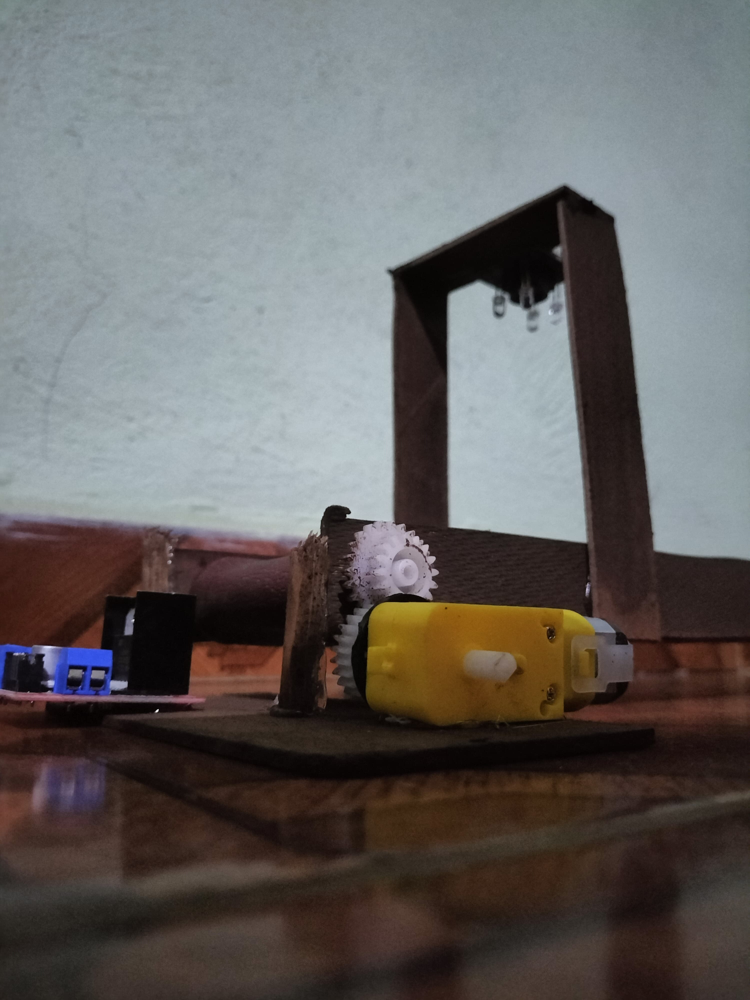
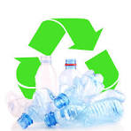
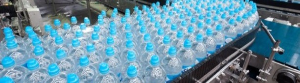
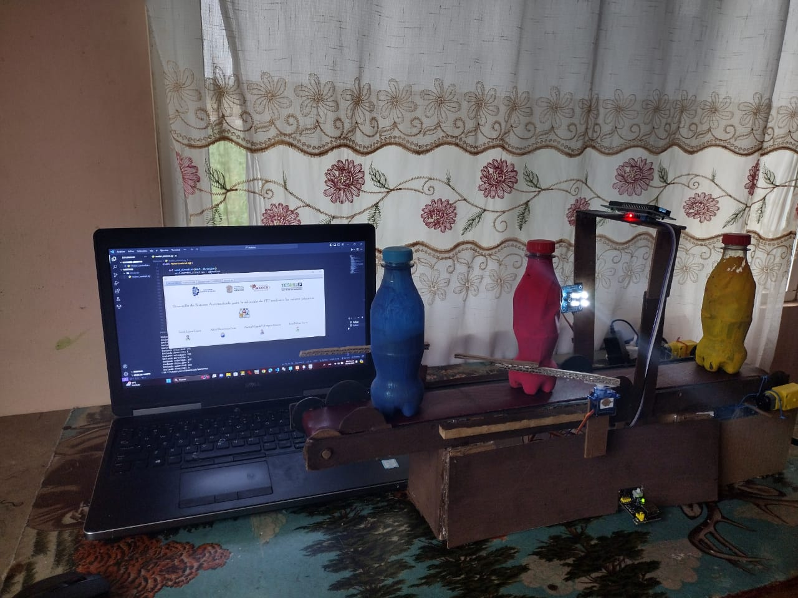

BIENVENIDOS al DESARROLLO DE SISTEMA AUTOMATIZADO PARA LA SELECCIÓN DE PET MEDIANTE LOS COLORES PRIMARIOS
El Selector de PET surge como una respuesta ingeniosa y tecnológica a este desafío. Este software, diseñado, ofrece una solución innovadora para la clasificación y selección de botellas de PET según su color, en este caso, los colores primarios (azul, amarillo, rojo). El Selector de PET es capaz de distinguir entre los diferentes colores de las botellas con una precisión excepcional, eliminando así el margen de error humano y garantizando una clasificación óptima. Con esto se pretende simplificar y optimizar el proceso de clasificación de botellas de PET, el Selector de PET no solo mejora la eficiencia operativa, sino que también promueve un enfoque más sostenible y responsable hacia el reciclaje de plásticos.
PROBLEMTICA A RESOLOVER!!!
La gestión inadecuada del PET resulta en la acumulación de residuos plásticos en el medio ambiente, lo que afecta la calidad del suelo, el agua y el aire, y contribuye al problema global de la contaminación plástica. La recolección de PET se realiza de manera indiscriminada, lo que conduce a un uso ineficiente de recursos y aumenta los costos operativos
SOLUCIÓN
Se ocupa realizar un sistema automatizado de selección de botellas de PET que pueda identificar y seleccionar los colores primarios de botellas, que se manejan en la industria para llevar a cabo un proceso eficaz y mayor rapidez al realizar este paso antes mencionado así como los costos elevados de procesamientos.
Implementación del Selector de PET
Se crea un diseño en 3D del modelado del maquetado y así mismo se creó modelado en SketchUp de los componentes a conectar entre sí con el hardware.
Resultados
Al realizar pruebas profundas, la capacidad del sistema para identificar y clasificar con éxito el PET según sus colores primarios, azul, amarillo y rojo, con esto la implementación de la automatización ha contribuido a la reducción significativa del error humano, lo que garantiza una mayor consistencia y confiabilidad en la clasificación de PET.
